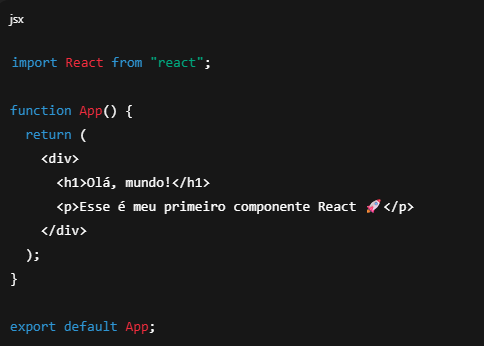
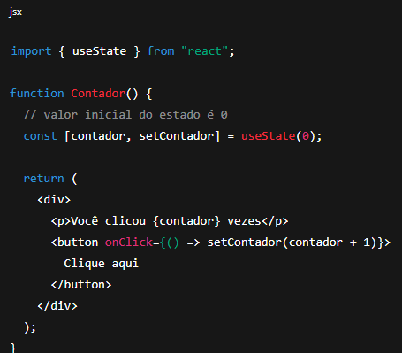
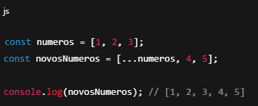
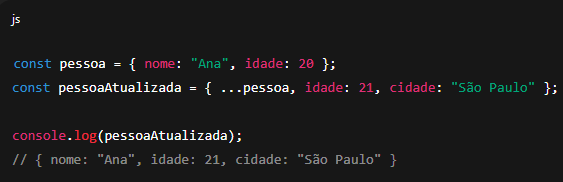

REACT
O que é React
React é uma biblioteca JavaScript (não é um framework) criada pelo Facebook (Meta) em 2011 para construir interfaces de usuário (UI), principalmente aplicações web de página única (SPAs – Single Page Applications).
O que o React faz?
- Ele ajuda você a criar componentes reutilizáveis (pequenos blocos de código que representam partes da interface, como botões, formulários, cards, etc.).
- Usa um conceito chamado Virtual DOM, que torna as atualizações da tela muito rápidas porque ele só altera no navegador o que realmente mudou.
- Permite separar sua aplicação em componentes menores e independentes, facilitando manutenção e reaproveitamento.
- Componentes → blocos reutilizáveis da interface.
- JSX → sintaxe parecida com HTML dentro do JavaScript.
- Props → parâmetros que um componente recebe.
- State → dados internos de um componente que podem mudar ao longo do tempo.
- Hooks (como useState, useEffect) → funções especiais para lidar com estado e efeitos colaterais.
- SPA's (Single Page Application) → são aplicações Web que tem como objetivo trazer uma experiência similar a de um APP desktop para o usuário (sem recarregar a página).
Exemplo simples de uso de React
➡️ Esse código define um componente chamado App. Ele retorna um trecho de JSX (JavaScript + HTML misturados), que o React transforma em HTML real no navegador.
Conceitos principais
O que é Virtual DOM?
O Virtual DOM é uma cópia leve do DOM real, mantida em memória pelo React. Quando o estado de um componente muda:
- O React atualiza o Virtual DOM.
- Ele compara (diffing) a versão antiga e a nova do Virtual DOM.
- Só aplica as diferenças necessárias no DOM real.
JSX React
JSX (JavaScript XML) é uma extensão de sintaxe do JavaScript usada no React. Ele permite escrever código parecido com HTML dentro do JavaScript, mas que depois é transformado em código JS puro.
Em outras palavras: JSX é um jeito mais fácil e legível de criar a interface (UI) no React.
Regras importantes do JSX
- Sempre retornar um único elemento pai
(Por isso usamos
divou<> ...como fragmento). - Usar className no lugar de class
jsx
<p className="texto">Hello</p>
- Expressões JS dentro de { }
jsx
const nome = Murilo;
return <h1> Olá, {nome}! </h1>
Criando uma aplicação em React
1. Usando o Create React App (CRA) (mais antigo, mas ainda usado)
Esse é o jeito tradicional, mas não é o mais recomendado atualmente.
bash
npx create-react-app nome-do-projeto
cd nome-do-projeto
npm start
ou, se você preferir o Yarn:
bash
yarn create react-app nome-do-projeto
cd nome-do-projeto
yarn start
Isso vai criar uma pasta nome-do-projeto com toda a estrutura do React já pronta. Depois, é só acessar http://localhost:3000.
2. Usando o Vite (mais rápido e recomendado hoje)
O Vite é uma ferramenta moderna que inicializa e roda o projeto de forma muito mais rápida que o CRA.
bash
npm create vite@latest nome-do-projeto
cd nome-do-projeto
npm install
npm run dev
Criar projeto com Yarn
bash
yarn create vite@latest nome-do-projeto
cd nome-do-projeto
yarn install
yarn dev
No final, ele vai mostrar um link (geralmente http://localhost:5173) para você abrir no navegador.
Estado no React
No React, um estado (state) é um objeto que armazena informações dinâmicas de um componente, ou seja, dados que podem mudar ao longo do tempo e que, quando alterados, fazem o React re-renderizar (atualizar) o componente automaticamente na tela.
Em outras palavras: o estado é como a "memória" do componente — ele guarda valores que podem ser atualizados conforme a interação do usuário ou eventos da aplicação.
Exemplo simples:
O que acontece aqui:
useState(0)cria um estado chamado contador, que começa em 0.setContadoré a função usada para atualizar o valor do estado.- Sempre que o botão é clicado, contador aumenta em 1 e o React re-renderiza o componente mostrando o novo valor.
spread operator (...)
O spread operator (...) no JavaScript é uma sintaxe que espalha (ou expande) os elementos de um array, objeto ou iterável em outro contexto.
Ele é muito usado para copiar, mesclar ou passar valores de forma simples.
Exemplo com arrays
Aqui o ...numeros “espalhou” os elementos do array original no novo array.
Exemplo com objetos
Ele copia todas as propriedades de pessoa, e depois sobrescreve/ adiciona novas.
Axios
O Axios é uma biblioteca JavaScript usada para fazer requisições HTTP (GET, POST, PUT, DELETE etc.) de forma simples, tanto no navegador quanto no Node.js.
Ele é muito usado em projetos React, Vue, Angular ou mesmo no backend, para buscar ou enviar dados para APIs.
Caminho relativos (relative paths)
📁 1. ./ → Pasta atual
- Significa “a partir da pasta onde estou agora”.
- É usado para referenciar arquivos ou pastas dentro do mesmo diretório.
Exemplo:
bash
./index.html
➡️ Significa “o arquivo index.html que está na pasta atual”.
📁 2. ../ → Pasta anterior (voltar uma)
- Significa “subir um nível” na hierarquia de pastas (voltar uma pasta).
Exemplo:
bash
../imagens/logo.png
➡️ Significa “vá uma pasta acima e depois entre em imagens e abra logo.png”.
📂 Se você está em:
bash
/projeto/src/js/
Então ../imagens/logo.png seria:
bash
/projeto/imagens/logo.png